Reactive Road Sign System
Senior design retrofit mechanism developed to reduce wind-induced damage to roadside sign infrastructure through controlled rotation and a sacrificial breakaway system.
Final Design Status
The final design, named PostSure, is an inline retrofit mechanism designed for existing roadway signposts. The system combines a torsional spring for controlled yaw rotation under moderate wind loading with a sacrificial breakaway pin that releases the mechanism under extreme wind loading.
The project was completed through analytical modeling, finite element analysis, prototype fabrication, and scaled experimental testing of candidate breakaway pin geometries.

Final Deliverables
- Fully developed inline retrofit mechanism compatible with common signpost geometries
- Analytical wind-load and breakaway pin stress model
- COMSOL FEA study of pin stress trends and peak stress locations
- Functional prototype and custom steel test fixture
- Experimental pin-sizing relationship based on destructive testing
Key Result
Experimental testing showed a strong nonlinear relationship between groove diameter and failure moment. The final power-law model estimated a required groove diameter of 0.783 ± 0.12 in for the governing wind-loading case.
System Overview
Conventional roadside signs are rigidly mounted, which means aerodynamic loads from extreme wind events are transmitted directly into the signpost and foundation. Under hurricane-level loading, this can lead to permanent deformation, structural failure, or uprooting of the supporting infrastructure.
The goal of this project was to develop a mechanical retrofit system that redirects damaging loads into replaceable components rather than the structural post itself. The mechanism is installed inline within the signpost load path and is designed to respond differently under low-wind, triggered, and failure conditions.
All structural calculations assume a standard 30-inch octagonal stop sign mounted with the bottom of the sign approximately 7 ft above ground. These assumptions define the projected wind-loading area and the moment arm used in the analytical model.
Final Design
The final PostSure design consists of an inline U-joint assembly installed directly in the signpost load path. The system is divided into two main mechanisms: a rotational unit that allows limited yaw motion under moderate wind loading, and a restricted joint assembly that releases through sacrificial pin failure under extreme loading.

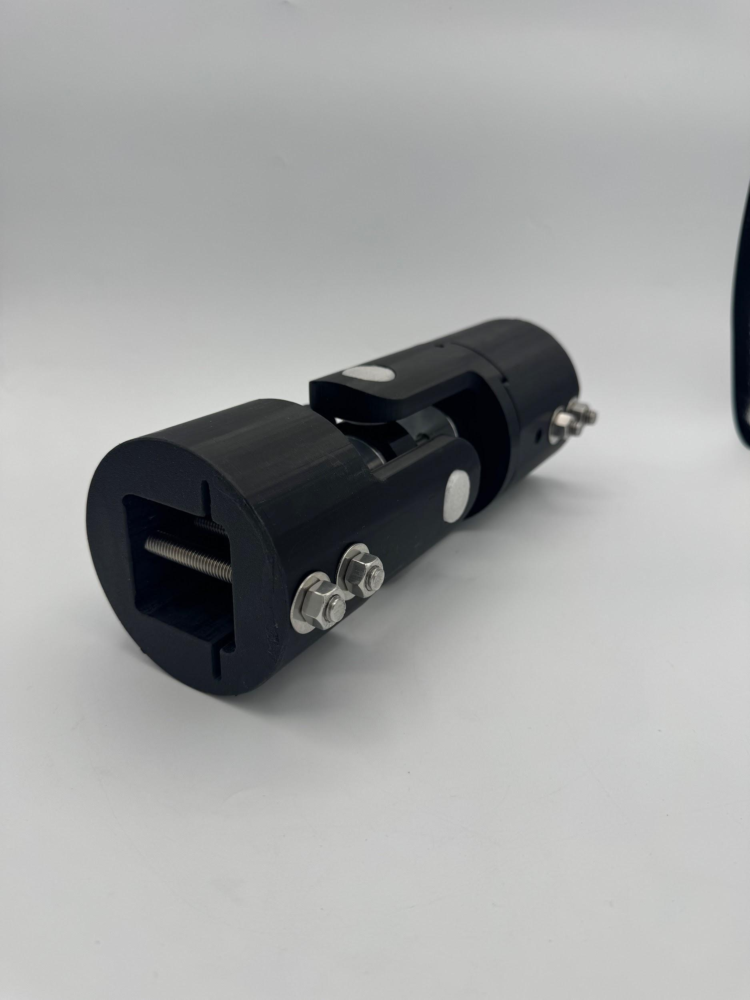
How the Mechanism Works
1. Rigid State
Under normal and low-wind conditions, the mechanism behaves like a conventional rigid signpost. The sacrificial pin remains intact, the U-joint is constrained, and the sign remains upright and readable.
2. Triggered Rotation
Under moderate hurricane-force wind loading, the torsional spring allows the sign to yaw up to ±15° about the post axis. This reduces the projected area normal to the wind direction while maintaining sign visibility.
3. Breakaway Failure
Under extreme wind loading, the sacrificial pin fractures at a predetermined threshold, releasing the constrained U-joint. The sign can then rotate downward into a lower-stress configuration until the storm passes and the pin is replaced.
Center Block and Restricted Joint
The center block forms the core of the restricted U-joint assembly. It defines the two rotational axes used after breakaway failure, while the central through-hole allows the sacrificial pin to constrain motion before failure.
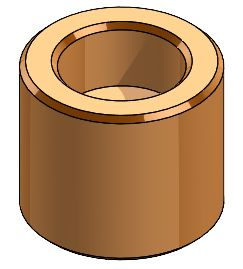
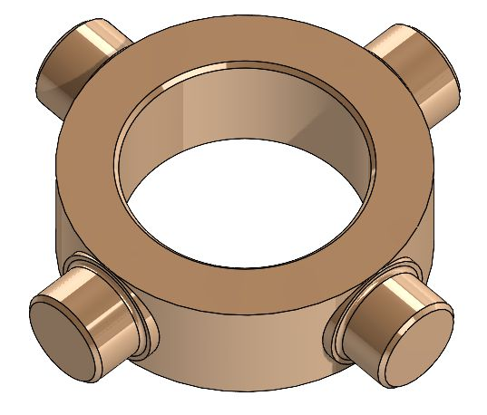


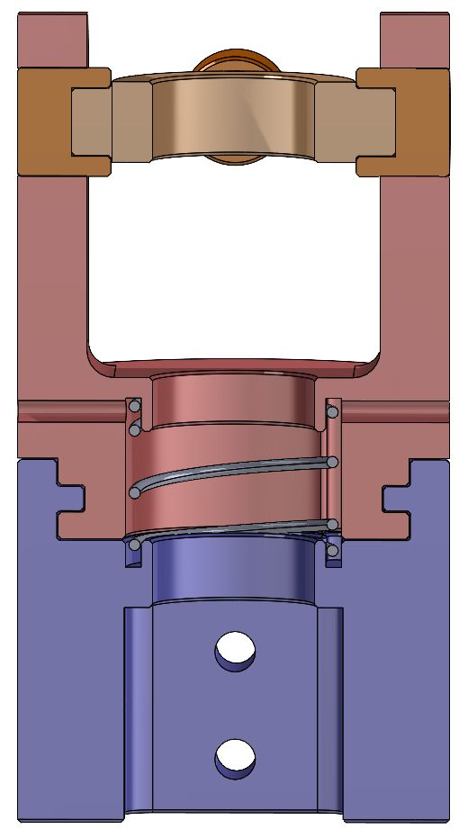

Top Yoke and Signpost Interface
The top yoke connects the upper signpost section to the restricted joint. Its square pocket and through-hole pattern allow compatibility with common signpost geometries while keeping the sacrificial pin concentric with the rest of the assembly.
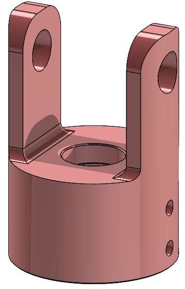
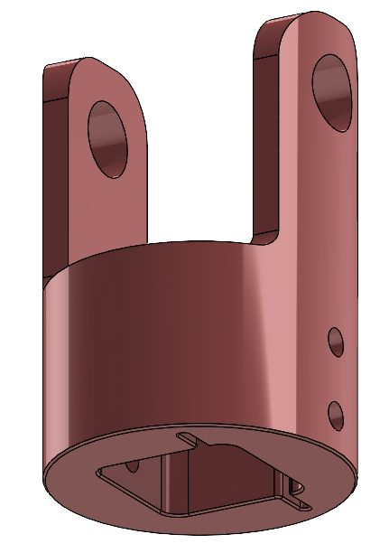

My Role
This project was completed as part of a two-person senior design team. My primary contributions focused on the analytical and engineering decision-making side of the project, including structural modeling, force calculations, spring sizing, materials selection, testing analysis, and project documentation, while collaborating closely with my teammate on iterative design development.
- Developed analytical wind-load and moment models for the mechanism
- Derived the combined bending and shear stress framework used to evaluate breakaway pin loading
- Performed torsional spring sizing for the partial-rotation trigger condition
- Supported COMSOL FEA interpretation for breakaway pin stress trends and peak stress locations
- Contributed to prototype planning, tolerancing decisions, and test fixture development
- Processed experimental data to relate groove diameter to failure moment for pin sizing
- Prepared major portions of the final design report and supporting documentation
Engineering Analysis
Analytical modeling was used to convert aerodynamic loading on the sign face into internal stresses within the breakaway mechanism. The wind force acting at the sign centroid creates a moment about the joint, which is then converted into an equivalent transverse force in the breakaway pin. The pin is modeled as a short circular beam subjected to combined bending and shear.
Variable definitions: Fwind = aerodynamic force on the sign face, h = distance from the sign centroid to the mechanism joint, d = breakaway pin diameter, Leff = effective pin span, α = internal moment fraction used to bound bending stress.
Wind Moment
Wind loading on the sign face is converted into a bending moment at the mechanism.
Equivalent Pin Force
The joint moment is converted into an equivalent transverse force in the breakaway pin.
Bending Stress
A bounded internal moment fraction α is used to estimate the bending stress in the pin.
Maximum Shear Stress
Shear stress is included because the pin behaves as a short beam under lateral loading.
Combined Stress Criterion
Maximum principal stress was used to combine bending and shear effects for candidate pin geometries.
Torsional Spring Sizing
The torsional spring was sized independently from the breakaway pin. The spring governs the partial-rotation trigger condition, where the sign begins to reorient under moderate wind loading. The model treats the spring as linear over the small angular range of interest and uses a trigger angle of 3° with a maximum stop angle of 15°.
Yaw Moment
Spring Torque
Required Spring Rate
Using the nominal aerodynamic offset case, the selected spring constant was approximately 2.43 × 104 lb·in/rad, balancing stability below the trigger condition with a manageable torque at the rotational stop.
Finite Element Analysis
Finite element analysis was used to compare stress distributions in representative rigid and non-rigid center-block configurations under ultimate wind loading. The simulations were treated as comparative stress estimates used to verify stress locations and guide breakaway pin sizing.


Pin Sleeve and Sacrificial Pin Design
Pin sleeves were used to position the sacrificial pin, maintain groove alignment, and transfer load through the restricted joint. The sacrificial pin was grooved so that failure occurred at a controlled cross-section during destructive testing.
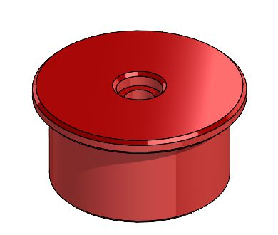
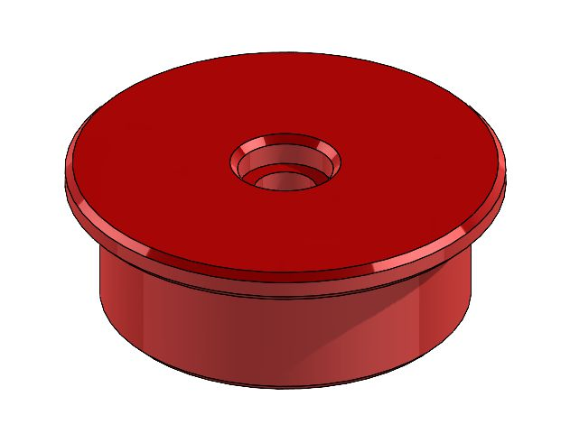
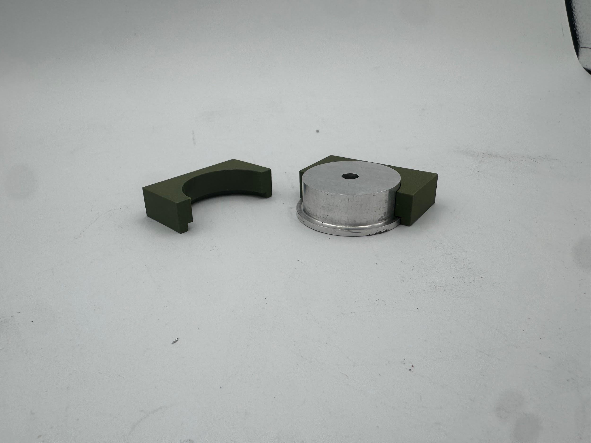
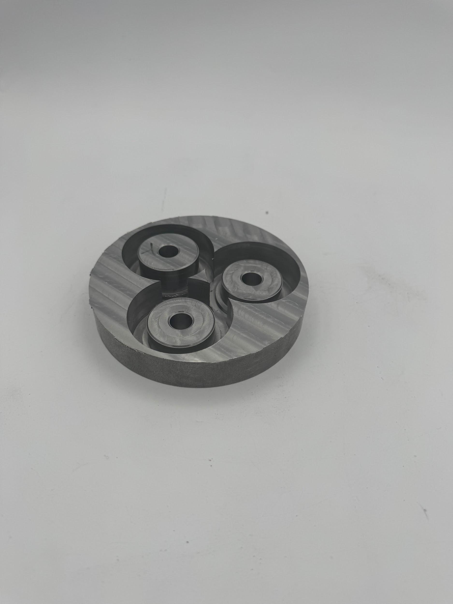

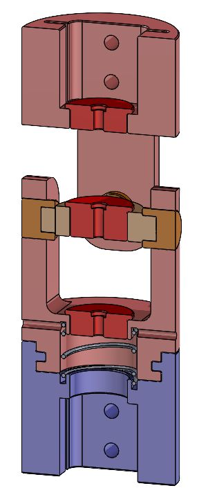

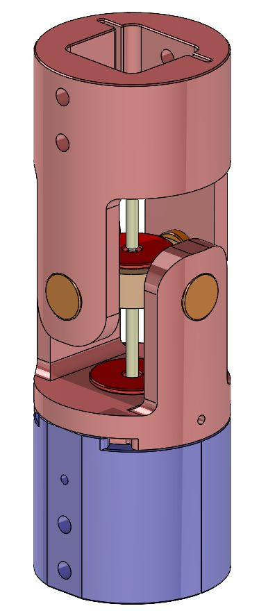

Experimental Validation
Scaled destructive testing was conducted to characterize the relationship between sacrificial pin groove diameter and failure moment. A custom steel fixture constrained the signpost while a hanging load was applied until fracture occurred at the pin groove.


Final Demonstration Video
The final project video summarizes the PostSure design intent, operating states, prototype development, and experimental validation strategy used to evaluate the breakaway pin behavior.
Test Results
Failure moment increased nonlinearly with measured groove diameter. A power-law fit captured the experimental trend with R² = 0.947, supporting the bending-dominated failure model. The fitted relationship was then used to extrapolate a preliminary design groove diameter for the final wind-loading condition.
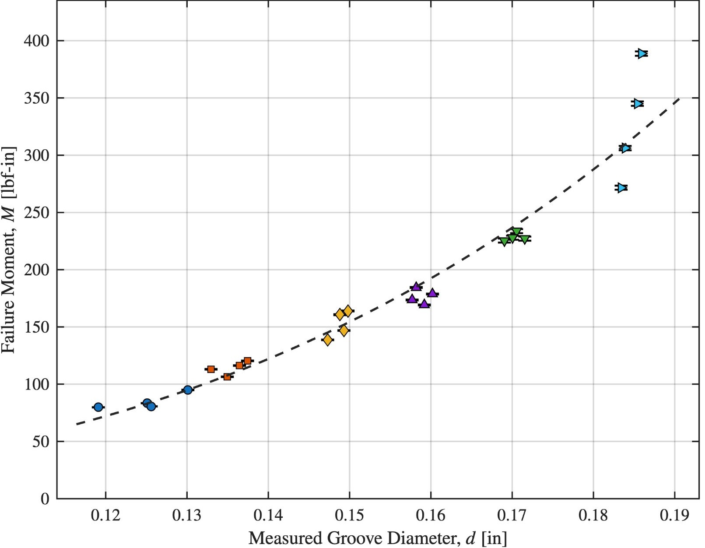
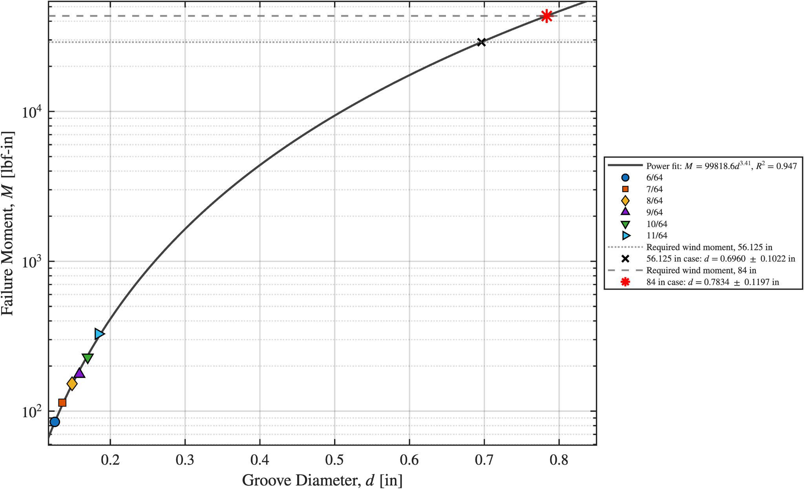
The final estimate was 0.783 ± 0.12 in. Because this diameter lies outside the directly tested range, it was interpreted as a first-order sizing estimate and a target for future full-scale validation rather than a fully validated final pin size.
Materials & Design Constraints
Material Strategy
The design uses corrosion-resistant materials and standard mechanical fasteners to support outdoor serviceability. Experimental pins were machined from available steel rod stock for testing, while the intended full-scale design uses a replaceable sacrificial pin sized to fail before permanent signpost damage occurs.
Key Constraints
The design had to remain compatible with standard square tube and U-channel signpost infrastructure, preserve roadway mounting requirements, survive high-corrosion outdoor environments, and remain practical to fabricate, test, reset, and service.
Expected Impact
The final PostSure design demonstrates a feasible approach for improving roadway sign resilience by shifting extreme wind failure into a low-cost replaceable component rather than the signpost or foundation. The project produced a validated foundation for future full-scale testing and shows how passive mechanical design can improve infrastructure resilience without requiring full replacement of existing roadside systems.